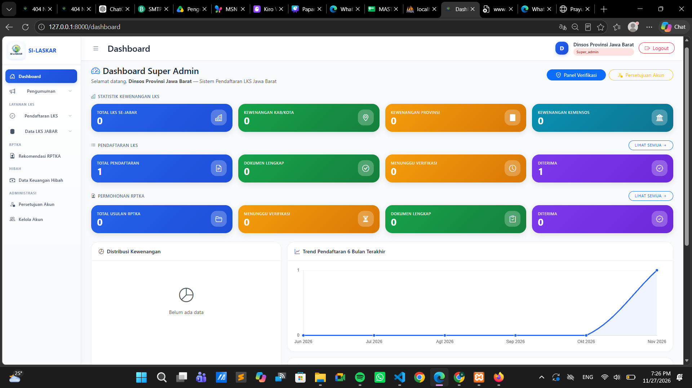
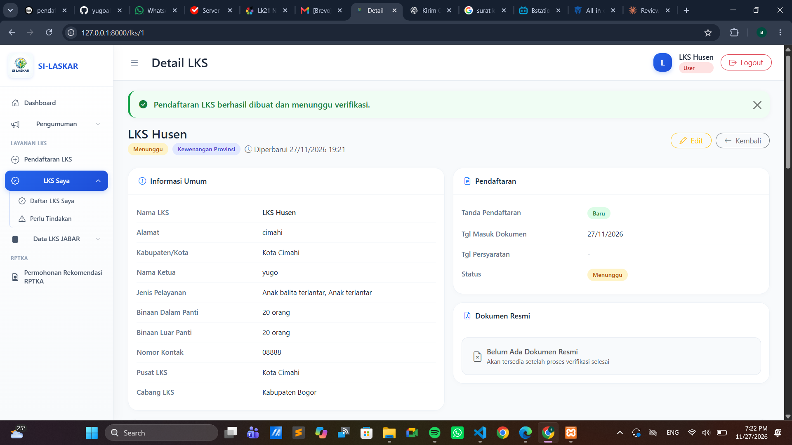
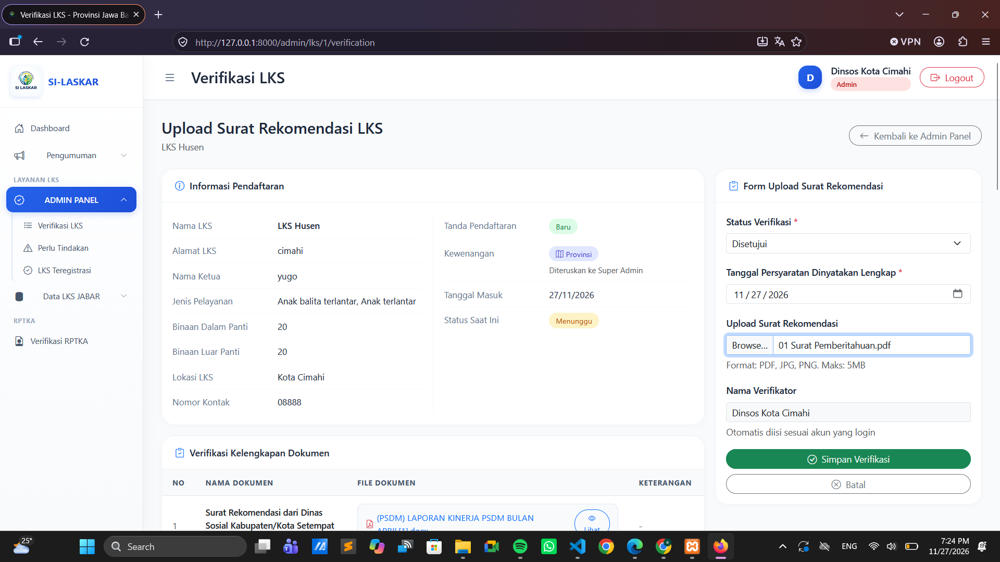

1 / 3

PROJECT 01
SI LASKAR
Sistem informasi Layanan Sosial Kelembagaan dan Administrasi Lembaga Kesejahteraan Sosial berbasis web untuk mendukung proses pendaftaran, verifikasi, dan monitoring Lembaga Kesejahteraan Sosial.
Laravel
MySQL
Bootstrap